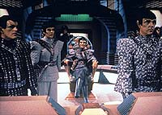
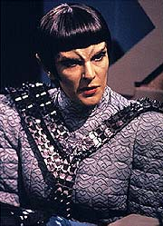
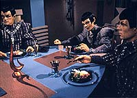
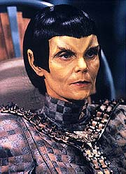
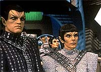

|
MANCHETE
DO EPISDIO
Segmento
arranca o melhor de Deanna
Troi e d nova face aos Romulanos
Episdio
anterior | Prximo
episdio
Sinopse:
Data Estelar: 46519.1.
Troi subitamente desperta e descobre que foi alterada cirurgicamente
para parecer com uma oficial Romulana e que foi levada para uma de
suas aves-de-guerra. Ela informada por N'Vek, o subcomandante da
nave Romulana, que, se ela tem esperanas de voltar Enterprise
viva, ela precisa fingir ser a major Rakal, do Tal Shiar, o servio
de inteligncia imperial. Suas instrues: ordenar a comandante
da ave-de-guerra a colocar a nave em curso para o setor Kaleb, com
uma misteriosa carga. N'Vek apresenta Troi comandante Toreth, que
tenta, sem sucesso, intimid-la. Destemida, Troi ordena um curso
para o setor Kaleb.
 Enquanto isso, na
Enterprise, Stefan DeSeve, um alferes da Frota Estelar que desertou
e se juntou aos Romulanos anos atrs, trazido a bordo depois de
arriscar sua vida para voltar ao espao da Federao. O
comandante Riker imediatamente o prende por traio. DeSeve diz
que urgente que ele fale com o capito Picard. Riker transmite a
mensagem e o capito se encontra com o desertor. DeSeve ento
transmite um recado vindo do embaixador Spock --ele quer que a
Enterprise encontre um cargueiro Corvallen e leve sua carga at o
territrio da Federao. Sem que Picard saiba, o ponto de
encontro no mesmo setor para o qual Troi enviou a ave-de-guerra
Romulana.
Enquanto isso, N'Vek revela a Troi o contedo da carga secreta.
Dentro dos contineres esto um membro importante do Senado
Imperial e seus assistentes, mantidos em estase. Eles esto
desertando para a Federao, e B'Vek parte do movimento. A
verdadeira major Rakal foi morta para que Troi, uma oficial da Frota
Estelar, pudesse substitu-la. Troi continua fingindo ser Rakal,
ciente de que participa de uma misso importante.
Como planejado, a ave-de-guerra encontra o cargueiro Corvalle. Troi
sente que o capito mercenrio do cargueiro pretende engan-los,
e N'Vek subitamente o destri, dizendo que foi a major Rakal quem
ordenou para faz-lo. A comandante Toreth fica furiosa e diz a Troi
que ela a responsvel pelas mortes. Troi exige que a
ave-de-guerra mantenha posio, ative seu dispositivo de
camuflagem e espere.
Ao mesmo tempo, Picard est intrigado com o fato de que a
Enterprise no encontrou o cargueiro Corvallen. Picard ento
descobre de DeSeve que a mensagem com as instrues no veio
diretamente de Spock, mas de um outro membro do movimento de unificao
Romulano. Picard ordena a Data que inicie uma busca padro pelo
cargueiro desaparecido.
 Na
ave-de-guerra, Troi critica N'Vek por destruir o cargueiro to
insensivelmente. N'Vek, sem remorso, diz que Troi deve ordenar curso
para uma base da Frota Estelar em Draken IV. Troi segue suas ordens
e ordena Toreth a estabelecer o curso. Repentinamente, os sensores
da ave-de-guerra detectam a presena de outra nave --a Enterprise.
Ansiosa para retornar sua nave, Troi ameaa acusar N'Vek de traio
se ele no permitir que a Enterprise descubra a posio da
ave-de-guerra, mesmo sob camuflagem.
N'Vek consegue que um de seus colegas na engenharia cause um
desbalanceamento leve dos motores, suficiente para a Enterprise
detectar a presena da nave. Toreth percebe que a nave da Federao
est reagindo como se estivesse detectando-os e resolve testar essa
suposio marcando um curso de coliso com a Enterprise.
Naturalmente, Picard ordena que sua nave troque de curso para evitar
o impacto, e Toreth decide que ir atacar. Troi ordena Toreth para
no faz-lo. Quando a comandante se recusa a obedecer, Troi a tira
do comando, com a ajuda de N'Vek, e assume ela mesma o posto. Ela
abre um canal com Picard, pedindo para ser levada bordo da
Enterprise para uma suposta negociao diplomtica para contornar
o incidente. Os escudos da Enterprise so baixados, e Troi ordena
que N'Vek dispare os disruptores sobre a nave da Federao. Quando
os oficiais de Picard reagem ao ataque, trs desertores Romulanos,
ainda em stasis, se materializam na ponte.
 Percebendo que o
tiro de disruptor era apenas um embuste para esconder o raio do
transporte, Toreth s assiste enquanto um piloto vaporiza o traidor
N'Vek. Toreth tenta acabar com Troi, mas Worf trava em seu sinal de
transporte e a traz para a Enterprise. Ela est aliviada, por
voltar para casa, e ao mesmo tempo chateada, pela perda de N'Vek.
Picard a consola, dizendo que seu esforo no foi em vo.
Comentrios:
"Face of
the Enemy" um episdio brilhante de tantas formas que
difcil escolher qual dos aspectos interessantes do segmento
devemos destacar primeiro. Optando pelo mais raro deles na srie,
ficaramos com o uso espetacularmente bem-executado de Deanna Troi.
a primeira vez em que a conselheira usada de uma maneira que
imponha um real desafio (e, por consequncia, uma real evoluo)
para a personagem.
Aqui finalmente Troi tirada de seu ambiente seguro, de sua
confortvel poltrona na ponte da Enterprise, e exposta a uma misso
legitimamente importante e perigosa. Nada de estupros mentais, metforas
de perigo ou coisas semelhantes. Aqui a mais dura realidade: um
passo em falso, voc morre. De quebra, h um tambm desafio
interior para a personagem: que diabos estou eu fazendo aqui nesta
nave com essas orelhas e essas sombrancelhas?!?
O resultado disso a melhor atuao de Deanna e de Marina Sirtis
na srie. A transio que feita da conselheira para a major do
Tal Shiar, ao longo dos 45 minutos, impressionante. No comeo,
ela estava totalmente intimidada, muito mais a velha Troi que
conhecemos. No final, ela poderia muito bem ser revelada como uma
Romulana de verdade que ningum ia achar muito absurdo. Nesse caso,
o roteiro e a atriz andaram de mos dadas para fornecer essa transio
to realista e bem colocada.
 Alis,
impressionante como um bom roteiro capaz de usar at as
caractersticas de um personagem que antes pareciam absolutamente
inconveniente. Nas primeiras temporadas da srie, Troi era
sumariamente cortada das histrias porque seus poderes empticos
acabariam com qualquer mistrio assim que os aliengenas viles
da semana aparecem na tela da Enterprise para bater um papo com
Picard. Aqui, a empatia da personagem cai como uma luva em toda a
situao (quando ela denuncia as ms intenes do cargueiro
mercenrio), favorecendo o andamento da histria e soando
absolutamente real.
S esse feito j bastaria para aplaudirmos Naren Shankar e Rene
Echevarria (roteirizador e criador do episdio, respectivamente).
Mas a coisa est longe de parar por a. Alm de permitir o bom
uso de Troi, o episdio representa uma espcie de ressuscitao
para os Romulanos clssicos. Uma mudana que sem dvida alguma s
vem para melhorar a caracterizao dessa espcie.
Durante a Srie Clssica, os Romulanos foram mostrados como
uma espcie honrada e preocupada com o que certo, embora seu
nacionalismo os conduzisse para os conflitos com a Federao. Em A
Nova Gerao, de um modo geral, o aspecto positivo dos
Romulanos foi transferido aos Klingons, e os orelhudos ficaram
apenas com a superficial caracterizao de "bad guys".
Aqui temos a chance de acompanhar a vida de uma tripulao
Romulana, e especialmente de sua comandante, Toreth. E o que vemos
um grupo de militares extremamente conscientes de seu dever para
com o Imprio, mas ainda assim crticos com relao a seu
governo. Uma caracterizao no s mais realista, como tambm
mais saborosa, em termos dramticos.
Graas a isso, temos insights valorosos na prpria organizao
de governo Romulana. Embora no saibamos muito de como o Imprio
estruturado, sabemos que duas de suas principais foras esto
em conflito. De um lado os militares, que, paradoxalmente, parecem
defender uma viso mais liberal do Imprio, e de outro o Tal Shiar,
um servio de inteligncia que, sob o pretexto de garantir a
"lealdade" dos cidados, usurpa toda e qualquer liberdade
individual. O choque dos dois conceitos, propiciado pelo conflito
entre Toreth e Troi (como Rakal), dos mais interessantes e
estabelece novos padres para entendermos as relaes no Imprio
(ainda que Troi nada soubesse sobre isso).
Para completar, o episdio faz uma bela ponte de continuidade com
os eventos mostrados em "Unification,
Part II" e com a participao de Spock em um
movimento secreto que luta pela reunificao de Romulus e Vulcano.
Os elementos desse contexto, somados a uma histria intrigante,
cheia de deseres, conflitos, reviravoltas, perigos e riscos a
serem tomados, propiciam a Troi e audincia um dos melhores episdios
da srie.
 A execuo
particularmente feliz do ponto de vista tcnico, com efeitos
especiais bastante convicentes no que diz respeito s movimentaes
das naves pela Zona Neutra e com belas tomadas do ambiente interior
da nave Romulana (trata-se do episdio em que melhor vemos uma nave
dessas por dentro). Um destaque especial fica para a abertura do
episdio, onde Troi se revela uma Romulana, que simplesmente
perfeita.
o melhor episdio da Nova Gerao com os Romulanos?
o melhor episdio de Troi na srie? A resposta sim, nos dois
casos. Um clssico absoluto.
Citaes:
Picard - "Why didn't you
mention this earlier?"
("Por que no mencionou isso antes?")
DeSeve - "It didn't seem necessary. And on Romulus you learn
not to volunteer information. It's a hard habit to break."
("No parecia necessrio. E em Romulus voc aprende a no
voluntariar informao. um hbito duro de quebrar.")
Troi - "Are you getting squirmish now, just because things
are getting a little more dangerous?"
("Est ficando molenga agora, s porque as coisas esto
ficando um pouco mais perigosas?")
Troi (como Rakal) - "Now commander, watch and learn. In
order to defeat your enemy, you must first understand them. The
Federation wishes to avoid war at all costs, so, I will offer them a
diplomatic solution. Get them to lower their shields, and then,
destroy them."
("Agora comandante, veja e aprenda. Para derrotar seu inimigo,
voc precisa primeiro entend-lo. A Federao quer evitar guerra
a todo custo, ento, vou oferecer a eles uma soluo diplomtica.
Fazer com que eles abaixem os escudos, e ento, destru-los.")
Trivia:
 Carolyn Seymour, que aqui interpreta a comandante Toreth, j havia
trabalhada na Nova Gerao como outra Romulana, no episdio
"Contagion", do segundo
ano.
Carolyn Seymour, que aqui interpreta a comandante Toreth, j havia
trabalhada na Nova Gerao como outra Romulana, no episdio
"Contagion", do segundo
ano.
A
alferes McKight, interpretada por Pamela Wislow, j foi vista na srie
nos episdios "Clues" e "In
Theory", ambos do quarto ano.
O
roteiro original deste episdio previa Q alterando toda a tripulao
da Enterprise-D para a de uma ave-de-guerra Romulana. Claro que
todos os personagens seriam transformados em Romulanos. A premissa
foi descartada pois, segundo Rick Berman, o roteiro tinha muito a
cara da srie "Quantum Leap".
Ficha
tcnica:
Histria de Ren Echevarria
Roteiro de Naren Shankar
Direo de Gabrielle Beaumont
Exibido em 08/02/1993
Produo: 140
Elenco:
Patrick Stewart como
Jean-Luc Picard
Jonathan Frakes como William Thomas Riker
Brent Spiner como Data
LeVar Burton como Geordi La Forge
Michael Dorn como Worf
Gates McFadden como Beverly Crusher
Marina Sirtis como Deanna Troi
Elenco convidado:
Carolyn Seymour
como Toreth
Barry Lynch como DeSeve
Dennis Cockrun como capito aliengena
Robertson Dean como o piloto
Pamela Winslow como a alferes McKnight
Scott McDonald como N'Vek
Majel Barrett-Roddenberry como a voz do computador
Episdio
anterior | Prximo
episdio
|